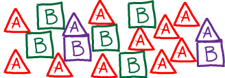

$
\newcommand{\conc}[1]{[\mathrm{#1}]}
\newcommand{\conceq}[1]{[\mathrm{#1}]^{\mathrm{eq}}}
\newcommand{\kcat}{k_{\mathrm{cat}}}
\newcommand{\kdt}{k_{\mathrm{dt}}}
\newcommand{\kdtsol}{k^{\mathrm{sol}}_{\mathrm{dt}}}
\newcommand{\kkeq}{K^{\mathrm{eq}}}
\newcommand{\kmmon}{\kon^{\mathrm{ES}}}
\newcommand{\kmmoff}{\koff^{\mathrm{ES}}}
\newcommand{\kconf}{k_{\mathrm{conf}}}
\newcommand{\koff}{k_{\mathrm{off}}}
\newcommand{\kon}{k_{\mathrm{on}}}
\newcommand{\ktd}{k_{\mathrm{td}}}
\newcommand{\ktdsol}{k^{\mathrm{sol}}_{\mathrm{td}}}
\newcommand{\ss}{\mathrm{SS}}
$
Mass-Action Kinetics
The "mass action" picture is a specific, simple version of how kinetic processes (binding, catalysis, conformational transitions, ...) occur in chemical systems.
In essence, the mass-action picture describes an ideal-gas situation: molecules interact strictly according to their concentrations without regard to the size or shape of the species.
There are no interactions except those explicitly described by the mass-action rate laws.
First-order Kinetics: Catalysis, Conformational transitions, Unbinding
In first-order kinetic processes, transitions occur in proportion to the quantity of (reactant) molecules or states present.
Thus a rate constant $k_{ij}$ describes the probability per unit time for molecule (or state) $i$ to convert to $j$.
This implies:
- $N_i k_{ij}$ = the number of molecules (or states) $i$ transitioning to $j$ per unit time, with $N_i$ the number of molecules/states $i$ at the time of interest.
- $\conc{i} \, k_{ij}$ = the number of molecules (or states) $i$ transitioning to $j$ per unit volume per unit time, where $\conc{i}$ is the concetration of $i$. This is the same as above except in concentration units.
- IMPORTANT: Although enzyme-catalyzed reactions will exhibit first-order kinetics, this applies only to the chemical reaction of the bound reactants/products - not to the binding process. Binding processes typically are second order: see below.
Rate constants, such as $k_{ij}$, are assumed not to change with time, although populations (e.g., $N_i$ or $\conc{i}$) tend to change in time except under steady-state conditions.
This holds for mass-action kinetics of all orders.
First-order examples
- Conformational transition.
A system undergoing first-order mass-action kinetics between two states, perhaps a conformational transition
\begin{equation*}
A \rightleftharpoons B
\end{equation*}
has two overall rates or fluxes
\begin{align*}
\mbox{rate of A to B transitions, per unit volume} &= \conc{A} \, k_{AB}
\\
\mbox{rate of B to A transitions, per unit volume} &= \conc{B} \, k_{BA}
\end{align*}
These can be combined to characterize the overall time-dependent behavior by differential equations:
\begin{equation}
\frac{ d \conc{A} }{ dt} = - \conc{A} \, k_{AB} + \conc{B} \, k_{BA}
\end{equation}
\begin{equation}
\frac{ d \conc{B} }{ dt} = - \conc{B} \, k_{BA} + \conc{A} \, k_{AB}
\end{equation}
The first equation, for example, says that the concentration of A changes by transitions out to B (in proportion to the concentration of A) as well as by transitions from B to A (in proportion to the concentration of B).
These mass-action kinetic equations determine how the concentrations of A and B change in time.
A and B could be conformational states or chemical states if it's a catalytic process.
-
Enzyme catalysis.
The catalysis $ES \rightleftharpoons EP$ of an enzyme/substrate complex, ES, into the enzyme-product complex, EP, at a rate $\kcat$ is quantified by
\begin{equation}
\mbox{rate of EP production, per unit volume} = \conc{ES} \, \kcat ,
\end{equation}
which indicates the concentration of EP is increasing in proportion to the concentration of ES.
As a concrete example, S could be ATP and P could be ADP (ignoring phosphate).
-
Unbinding.
Although binding is a second-order process because the two binding partners must "find" each other (see below), unbinding is a first-order processes.
Continuing the example above, we can quantify the rate of substrate unbinding from an enzyme via
\begin{equation}
\mbox{rate of E, P unbinding, per unit volume} = \conc{EP} \, \koff ,
\end{equation}
which indicates that the rate of concentration change due to unbinding is simply proportional to the number of EP complexes.
In other words, a given complex has fixed probability per unit time (namely, $\koff$) to unbind.
Second-order (Binding) Kinetics
Second-order kinetics is the highest order that we really need to understand (see below), but it's a bit trickier than first-order.
Second-order, or binding kinetics depends on the concentrations of two species.
There is a greater chance for collision/complexation as the concentrations of the two binding partners increase.
In the mass-action picture, the probability of binding is simply proportional to the product of the two concentrations, so that if A and B can bind to form AB according to the scheme
\begin{equation}
\label{aplusb}
A + B \rightleftharpoons AB
\end{equation}
then
- $\conc{A} \conc{B} \, \kon$ = the number of binding events per unit time per unit volume
- The second-order rate $\kon$ is a probabilty per unit time per molar concentration - in contrast to first-order rates which are simple probabilities per unit time.
- In essence, a second-order rate is the probability per molar concentration of one species (say, A) to bind the other species (B) held at some fixed reference concentration (typically, 1M). If B is at a different concentration, the product $\conc{A} \conc{B} \kon$ corrects for values above or below the reference.
Second-order/binding example
Given the binding process \eqref{aplusb}, if we include both binding and unbinding (a first-order process), we have
\begin{equation}
\frac{ d \conc{AB} }{ dt } = \conc{A} \conc{B} \, \kon - \conc{AB} \, \koff
\end{equation}
Note that we could equally have used the $E + S \rightleftharpoons ES$ process.
Including both binding and catalysis (from above: first-order) for ES, we can write
\begin{equation}
\frac{ d \conc{ES} }{ dt } = \conc{E} \conc{S} \, \kon - \conc{ES} \, \kcat
\end{equation}
where we have assumed catalysis is essentially irreversible, so that EP never converts to ES.
(In truth, irreversibility is only an approximation for a very slow reverse process, as discussed in the context of cycles.)
Higher-order Kinetics
Although higher-order kinetics (e.g., the simultaneous binding of three molecules) can be described mathematically, such kinetics largely represent an unnecessary approximation.
Of course, numerous biological complexes consist of many more than three molecules, but it is not reasonable to expect that the binding needs to occur simultaneously - which would be extremely improbable.
We expect, rather, that sequential pairwise binding events (described by second-order kinetics) will be a more physically realistic description for the buildup of multi-component complexes.
"Zero-order" Kinetics
Zero-order kinetics apparently represent something coming from nothing (a constant rate of creation or destruction of a species, independent of concentration).
Really, however, zero-order kinetics are meant to stand in for processes that are not explicitly modeled.
For example, if you were studying a molecular machine powered by ATP hydrolysis, to keep ATP and ADP at steady values (as the cell does viaevascript:changeTo('massAction','atpCycle')">complex machinery), a steady input and output of these molecules could be modeled by differential equations including zero-order temrms:
\begin{align}
\frac{ d \conc{ATP} }{ dt } &= k_{\mathrm{in}} + \cdots
\\
\frac{ d \conc{ADP} }{ dt } &= k_{\mathrm{out}} + \cdots
\end{align}
Note the absence of a molecular concentration multiplying the "in" and "out" rates on the right-hand-sides of the equations.
Limitations of the mass-action assumption

The mass action picture assumes ideal gas behavior: no concentration-dependence to interactions (except binding), and no volumetric effects.
Of course, both these assumptions are wrong.
For example, at higher concentrations, ions will interact differently with one another than at lower concentrations, due to the strong distance-dependence of Coulombic forces.
Also, any molecules, at high enough concentrations, will not bind by simple proportionality rules: as sketched in the figure above, once the environment becomes sufficiently crowded, the number of neighbors of a given molecule will reach a maximum, independent of concentration.
An explicit example of the mass-action picture breaking down is given at the end of the discussion of ionic gradients.